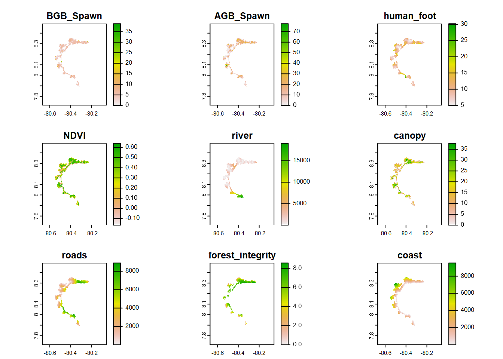
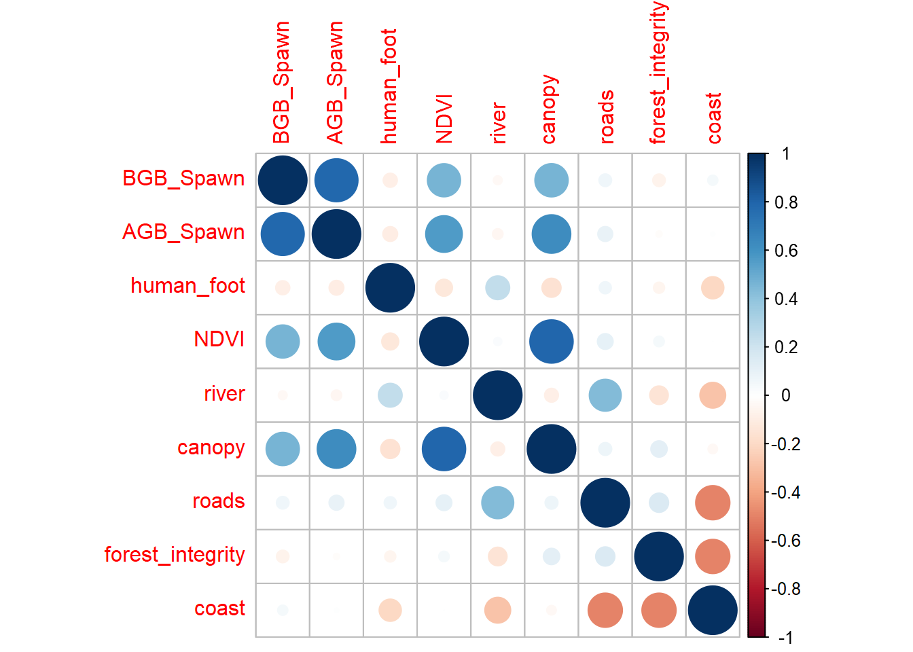
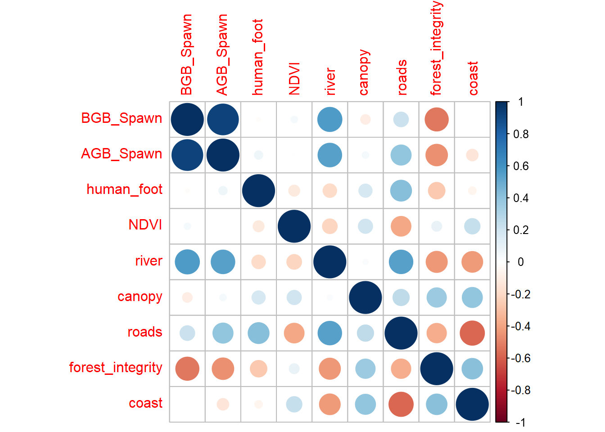

library(gt)library(lubridate)library(stringr)library(readxl)library(sf)library(MuMIn) # multimodel inferencelibrary(metafor)eval(metafor:::.MuMIn) # helper functions we need so that MuMIn and metafor can interact library(visreg) # see trendlibrary(MASS) # stepAIClibrary(terra)library(sjPlot)# library(mapview)library(corrplot)library(DT)library(tidyverse)options(scipen=99999)options(max.print=99999)options(stringsAsFactors=F)
Load Data
Code
covs <-read_csv("C:/CodigoR/AudubonPanama/shp/sites_covs_parita_nona.csv") |>mutate(site=Name) BFI_site<-read.csv("C:/CodigoR/AudubonPanama/data/BFI_site.csv", header =TRUE) # |> left_join(covs)# convierte covs a puntos terra# puntos <- vect(BFI_site, geom=c("Longitude", "Latitude"), crs="EPSG:4326")# convierte a sf# BFI_sf <- sf::st_as_sf(puntos)
Correlation in rasters
First examine correlation between possible predictors as raster layers
Code
BGB_Spawn <-rast("C:/CodigoR/AudubonPanama/raster/BGB Spawn.tif")AGB_Spawn <-rast("C:/CodigoR/AudubonPanama/raster/AGB Spawn.tif")NDVI <-rast("C:/CodigoR/AudubonPanama/raster/S2_NDVI_median_v2.tif")roads <-rast("C:/CodigoR/AudubonPanama/raster/roads_final_v2.tif")carbon_stock <-rast("C:/CodigoR/AudubonPanama/raster/soil_organic_carbon_stock_0-30m.tif")canopy <-rast("C:/CodigoR/AudubonPanama/raster/canopy_height_jetz2.tif")human_foot <-rast("C:/CodigoR/AudubonPanama/raster/human_footprint.tif")river <-rast("C:/CodigoR/AudubonPanama/raster/rivers_final_v2.tif")coast <-rast("C:/CodigoR/AudubonPanama/raster/coast_final_v2.tif")forest_integrity <-rast("C:/CodigoR/AudubonPanama/raster/forest_integrity_index.tif")# make elevation equal# srtm_projected <- projectRaster(srtm_crop, crs=projection(NDVI), method="ngb") # elev <- mask(resample(rast(srtm_projected), NDVI), NDVI)# list of terras SpatRasters many_rasters <-list(BGB_Spawn, AGB_Spawn, human_foot, NDVI, river, canopy, roads, forest_integrity, coast)# terra stackcovs_many_raster <-rast(many_rasters)names(covs_many_raster) <-c("BGB_Spawn","AGB_Spawn", "human_foot", "NDVI", "river", "canopy", "roads", "forest_integrity","coast")plot(covs_many_raster)

Code
co <-layerCor(covs_many_raster, "pearson")corrplot(co$correlation)

Correlation in sites (points) where the Audiomoth was installed
Code
# extract values from raster # covs_all1 <- terra::extract(covs_many_raster, puntos) # saved to avoid conflict between terra::extract and dplyr# saveRDS(covs_all1, "C:/CodigoR/AudubonPanama/data/BFI/covs_all.RDS")# save(covs_all, file = "C:/CodigoR/AudubonPanama/data/BFI/covs_all.Rda")covs_all <-readRDS("C:/CodigoR/AudubonPanama/data/BFI/covs_all.RDS")#load the rda file# covs_all <- load(file = "C:/CodigoR/AudubonPanama/data/BFI/covs_all.Rda")# write.csv(covs_all)# covs_all$site <- puntos$site # ad site name# change NA to 0 # covs_all <- substr(covs_all, NA, 0) #r eplace in terracovs_all[is.na(covs_all)] <-0M =cor(covs_all[,c(-1, -11)]) # removes ID and sitecorrplot(M)

layer removed: BGB_Spawn,
Which model predicts BFI the best?
Information-theoretic approaches provide methods for model selection and (multi)model inference that differ quite a bit from more traditional methods based on null hypothesis testing (e.g., Anderson, 2008; Burnham & Anderson, 2002). These methods can also be used in the meta-analytic context when model fitting is based on likelihood methods.
We will now examine the fit and plausibility of various models, focusing on models that contain none, one, and up to eight of these possible predictors covariates.
With level = 1, we stick to models with main effects only. This implies that there are \(2^8\) = 256 possible models in the candidate set to consider. Since we want to keep the results for all these models (the default is to only keep up to 100 model fits), We set confsetsize=256. With crit=“AICc”, we select the Akaike Information Criterion corrected by small sample size, in this case: the AICc that we would like to compute for each model and that should be used for model selection and multimodel inference.
lets put all data in the same table
Code
# put in a tabledat1 <- BFI_site |>left_join(covs_all)dat <- dat1 |> dplyr::select(bfi_unscaled, AGB_Spawn, human_foot, NDVI, river, canopy, roads, forest_integrity, coast) #bfi_scaled_scale
The answer is: it seems to be between human_foot and forest_integrity. So another plausible model is: bfi_unscaled ~ human_foot +human_foot:forest_integrity
lets try stepwise model selection by AIC
Let’s try analyzing the data using stepAIC() from the MASS package instead. Despite its name the method is not carrying out stepwise multiple regression. Rather, it is using a stepwise search strategy (hopefully) to find the “best” model (the model minimizing the AIC score) given certain restrictions.
![]()